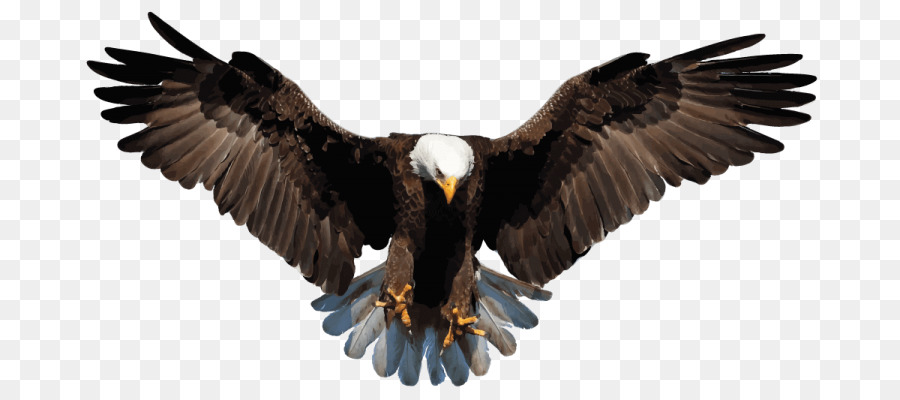

<!-- menyimpan sebuah gambar didokumen html  -->
<!DOCTYPE html>
<html>
<head>
	<meta charset="utf-8">
	<title>Gambar</title>
</head>
<body>

<!--

atribut di img:
src = untuk gambarnya
alt = jika gambat tidak muncul maka tulisannya yang muncul
width = lebar gambarnya jika dengan angka satuannya pixel,jika ditambah % itu ukuranya relatif   halamannya 
height = tinggi gambarnya jika dengan angka satuannya pixel,jika ditambah % itu relatif ukuranya halamannya
title - untuk judul gambar 
untuk height dan weiht pilih salah satu saja-->


<!-- hyperlink + img -->
<a href="https://www.google.com/search?q=gambar+elang&rlz=1C1CHBD_enID950ID950&source=lnms&tbm=isch&sa=X&ved=2ahUKEwjgqs2Oy8nyAhWDXCsKHXh3A5wQ_AUoAXoECAEQAw&biw=1440&bih=913#imgrc=GOgEW8VX7BA09M">
	
</a>
</body>
</html>